The library's graphics tests each write a picture. A picture can be wrong in a way no counter sees: a province missing from a map, a label across an edge. So here is each one, drawn again tonight where it can be, with the script that makes it and a place for a person's verdict.
27 pictures. 7 were drawn again tonight and are byte for byte identical to the picture the library kept; 6 were drawn again and differ in their bytes; 14 could not be. 0 carry a person's verdict.
To give a verdict: add an entry to data/gallery-verdicts.json with your name, right, wrong or uncertain, the date and what you saw. The next build prints it under the picture.
connectome_realnot drawn again: nm_cnic_006.swc not present -- see connectome_DATA.md for the fetch.; the picture shown is the one the library keptthe script : base/test/graphics/connectome_real.ring(opens in a new tab)Unperceived: nobody has yet said whether this picture is right.
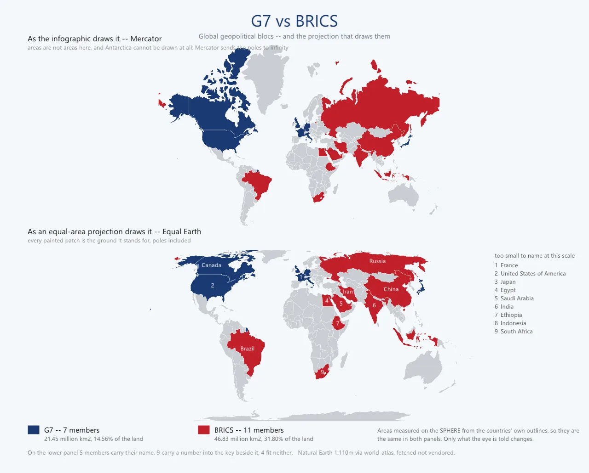
geo_blocsnot drawn again: the script stopped; the picture shown is the one the library keptthe script : base/test/graphics/geo_blocs.ring(opens in a new tab)Unperceived: nobody has yet said whether this picture is right.
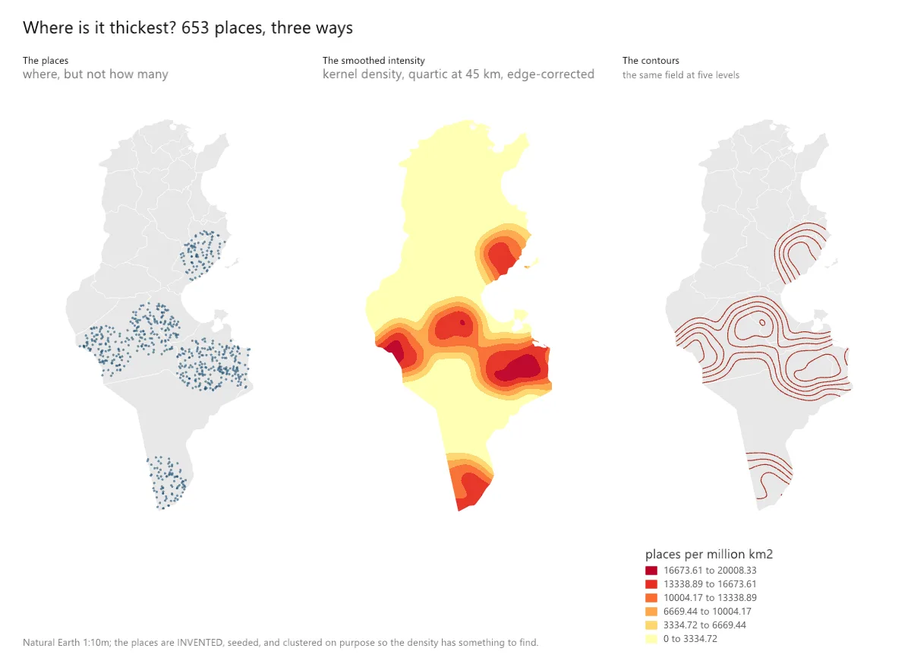
geo_fieldnot drawn again: the script stopped; the picture shown is the one the library keptthe script : base/test/graphics/geo_field.ring(opens in a new tab)Unperceived: nobody has yet said whether this picture is right.
geo_francenot drawn again: atlas/admin1_france.geojson is not present -- see atlas/README.md.; the picture shown is the one the library keptthe script : base/test/graphics/geo_france.ring(opens in a new tab)Unperceived: nobody has yet said whether this picture is right.
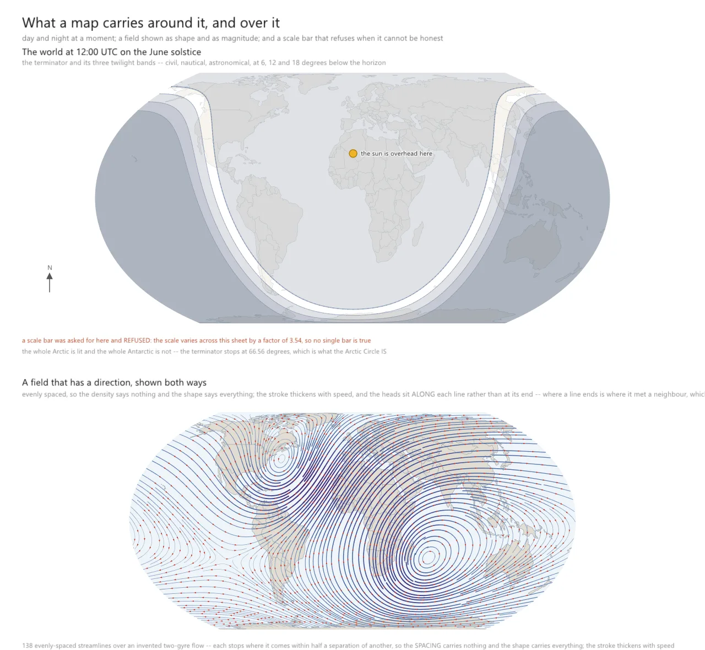
geo_furniturenot drawn again: the script stopped; the picture shown is the one the library keptthe script : base/test/graphics/geo_furniture.ring(opens in a new tab)Unperceived: nobody has yet said whether this picture is right.
geo_geodesynot drawn again: the script stopped; the picture shown is the one the library keptthe script : base/test/graphics/geo_geodesy.ring(opens in a new tab)Unperceived: nobody has yet said whether this picture is right.
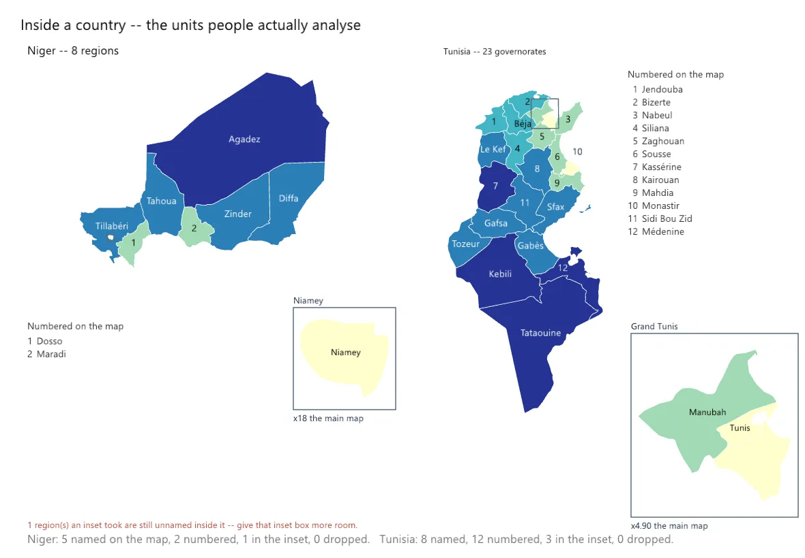
geo_insidenot drawn again: the script stopped; the picture shown is the one the library keptthe script : base/test/graphics/geo_inside.ring(opens in a new tab)Unperceived: nobody has yet said whether this picture is right.
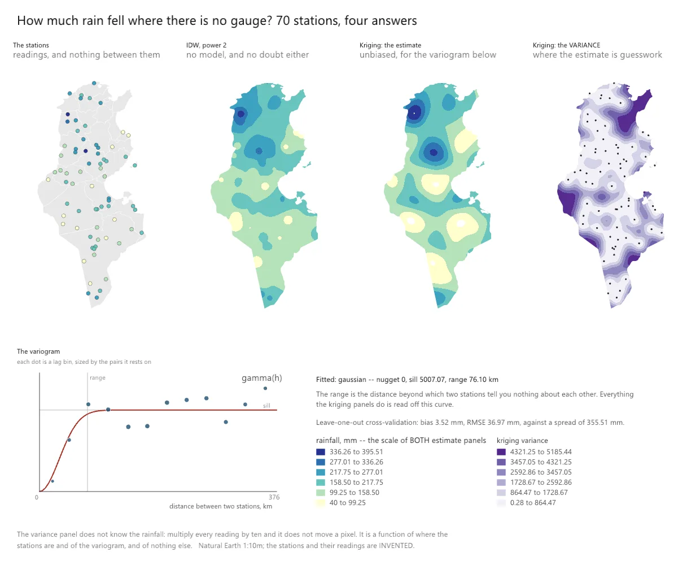
geo_interpnot drawn again: the script stopped; the picture shown is the one the library keptthe script : base/test/graphics/geo_interp.ring(opens in a new tab)Unperceived: nobody has yet said whether this picture is right.
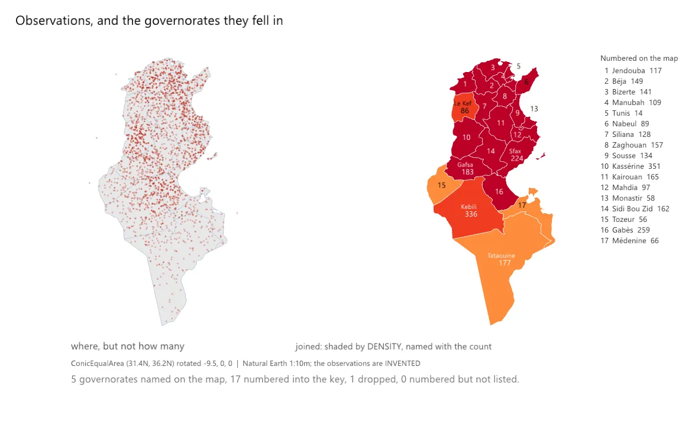
geo_joinnot drawn again: the script stopped; the picture shown is the one the library keptthe script : base/test/graphics/geo_join.ring(opens in a new tab)Unperceived: nobody has yet said whether this picture is right.
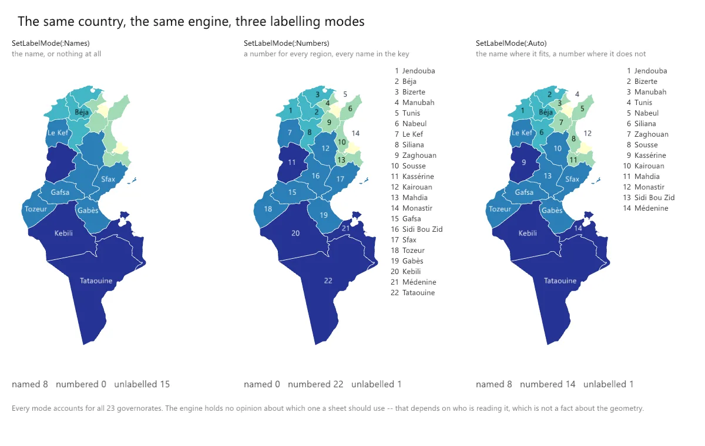
geo_modesnot drawn again: the script stopped; the picture shown is the one the library keptthe script : base/test/graphics/geo_modes.ring(opens in a new tab)Unperceived: nobody has yet said whether this picture is right.
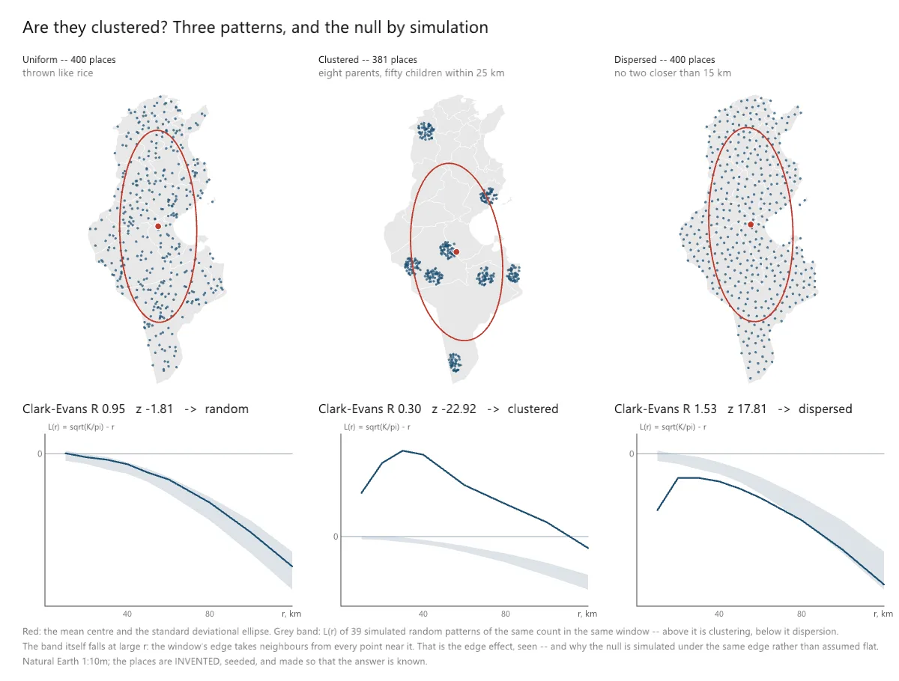
geo_pointsnot drawn again: the script stopped; the picture shown is the one the library keptthe script : base/test/graphics/geo_points.ring(opens in a new tab)Unperceived: nobody has yet said whether this picture is right.
geo_sheetnot drawn again: the script stopped; the picture shown is the one the library keptthe script : base/test/graphics/geo_sheet.ring(opens in a new tab)Unperceived: nobody has yet said whether this picture is right.
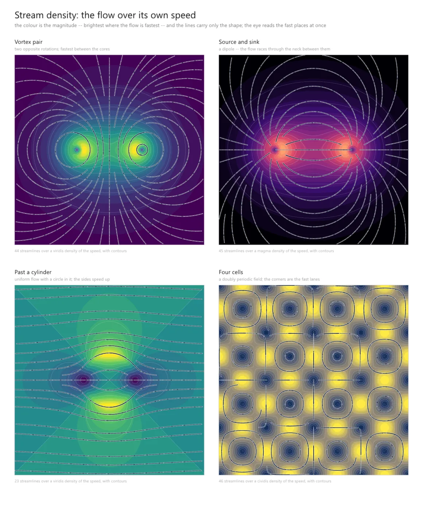
geo_stream_densitydrawn again tonight in 5.6 s, identical to the kept picturethe script : base/test/graphics/geo_stream_density.ring(opens in a new tab)Unperceived: nobody has yet said whether this picture is right.gg4_framegraphdrawn again tonight in 4.4 s, not byte for byte identical to the kept picture: a person decides whether it is the same picturethe script : base/test/graphics/gg4_framegraph.ring(opens in a new tab)Unperceived: nobody has yet said whether this picture is right.
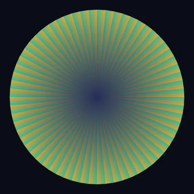
gg4_oneframedrawn again tonight in 5.2 s, not byte for byte identical to the kept picture: a person decides whether it is the same picturethe script : base/test/graphics/gg4_oneframe.ring(opens in a new tab)Unperceived: nobody has yet said whether this picture is right.
gg5_materialgraphdrawn again tonight in 10.0 s, not byte for byte identical to the kept picture: a person decides whether it is the same picturethe script : base/test/graphics/gg5_materialgraph.ring(opens in a new tab)Unperceived: nobody has yet said whether this picture is right.
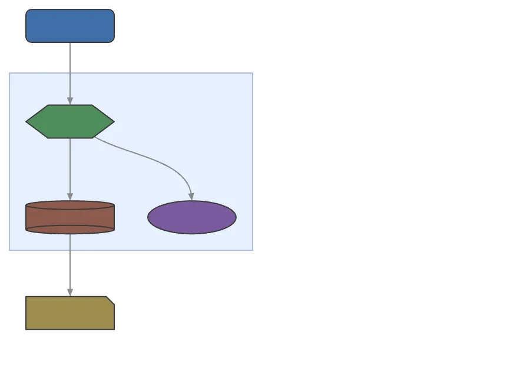
gg_diagram_nativedrawn again tonight in 5.1 s, not byte for byte identical to the kept picture: a person decides whether it is the same picturethe script : base/test/graphics/gg_diagram_native.ring(opens in a new tab)Unperceived: nobody has yet said whether this picture is right.
gg_window_overlaydrawn again tonight in 4.2 s, not byte for byte identical to the kept picture: a person decides whether it is the same picturethe script : base/test/graphics/gg_window_overlay.ring(opens in a new tab)Unperceived: nobody has yet said whether this picture is right.
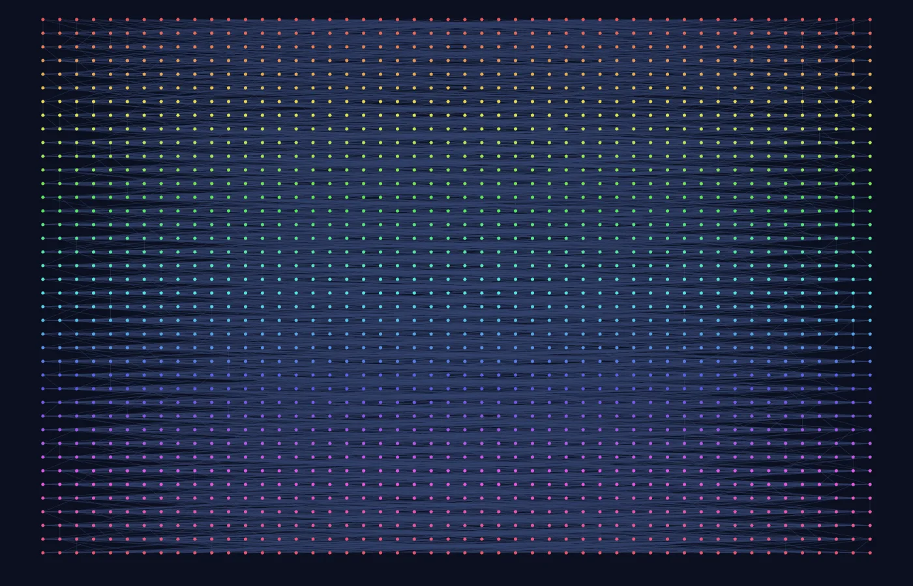
graph_layout_hierarchicaldrawn again tonight in 11.7 s, not byte for byte identical to the kept picture: a person decides whether it is the same picturethe script : base/test/graphics/graph_layout_hierarchical.ring(opens in a new tab)Unperceived: nobody has yet said whether this picture is right.
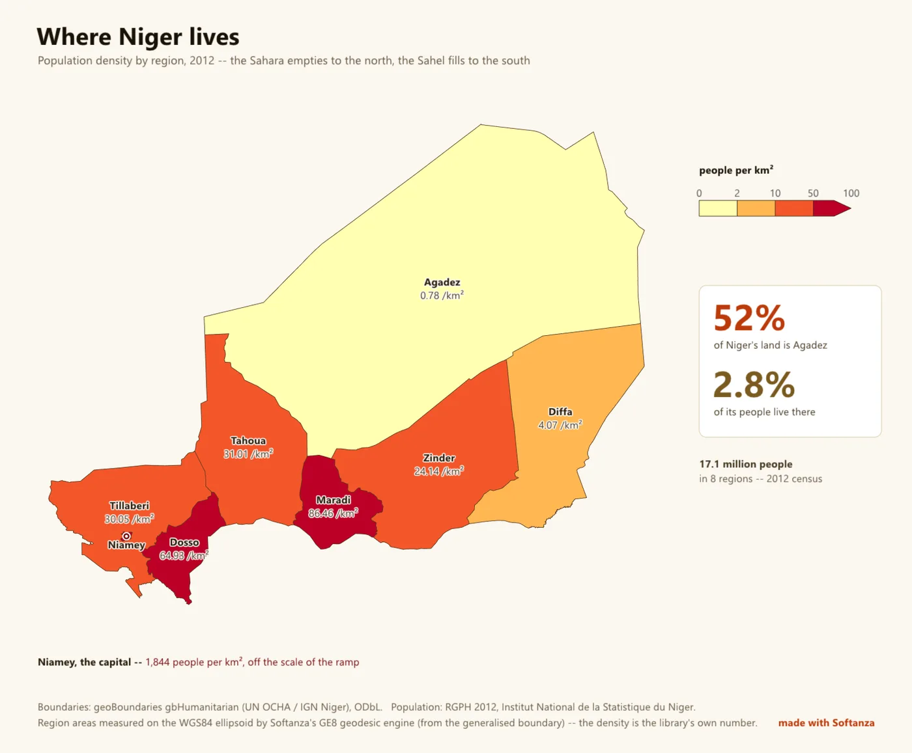
niger_densitynot drawn again: In read() in file niger_density.ring; the picture shown is the one the library keptthe script : base/test/graphics/niger_density.ring(opens in a new tab)Unperceived: nobody has yet said whether this picture is right.
in construction The perception gate for these pictures is open. An AI model has judged some of them in the past, and an AI model's opinion is not here: only a person's verdict, with their name and the date, is printed. The pictures that were not drawn again need data that is not in the repository, a window on a screen, or a file the script could not read; each says which.